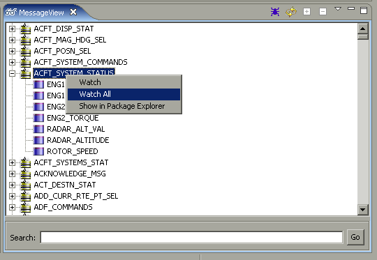

Watching Messages/Elements
What it does
Adds the selected element or message to the Message Watch tool.
How to do it
From the message watch tool, right-click on the desired message or element
and choose "Watch". If a message is selected, "Watch" will add only the
message to Message Watch, "Watch All" will add the message and all of its
elements.
